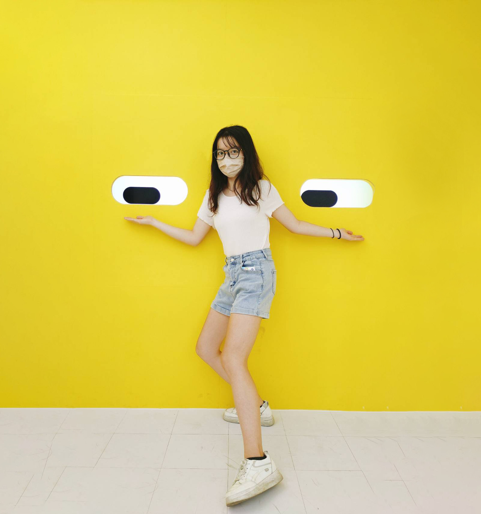

Hey，我是 Cindy，很高興認識你！
#傾聽 · #努力 · #團隊合作
-
我是Cindy一名UI/UX產品設計師 ，熱愛將創意轉化為出色的 使用者體驗 。在設計的世界中，我尋找每個機會來創建簡潔、直觀且美觀的產品，讓使用者感到愉悅且輕鬆使用。
Download CV
我曾參與各種專案，從網站到手機應用程式，透過深入了解使用者需求和行為，我能夠製定出實用而精心設計的界面，讓使用者能夠輕鬆達成目標並流暢地與產品互動。
在設計過程中，我重視用戶的意見和回饋，並相信這些寶貴的意見是改進和優化產品的關鍵，我喜歡和團隊密切合作，一同討論並挑戰想法，確保最終呈現的產品能夠真正滿足用戶的需求。
我喜歡探索新的設計趨勢和技術，並持續學習，不斷精進自己的技能，以保持在競爭激烈的設計領域中的競爭力，我期待能夠與志同道合的人共事，攜手打造令人驚嘆的產品，並為用戶帶來美好的故事。 - 
-
引導團隊朝著共同的目標前進
我們與隊友共同面對挑戰，不僅要發揮個人的優勢，更需要在合作中發揮團隊的力量需要相互信任、溝通順暢，共同制定策略，協調配合，才能取得好成果，通過比賽我們可以學會聆聽他人意見，學會尊重不同觀點，學會欣賞和發揚每個隊員的優勢。在團隊中，每個人都扮演著不同的角色，彼此的合作和協調是取得勝利的關鍵。